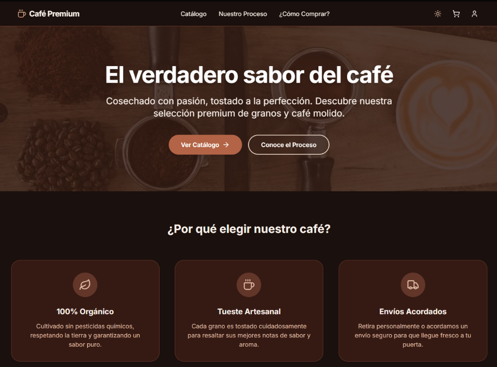

Una tienda en línea interactiva y elegante diseñada para ofrecer una experiencia fluida de exploración y compra de café de especialidad. Cualquier visitante puede interactuar directamente con los productos, navegar las categorías y realizar simulaciones y pruebas de flujo de compra en tiempo real.